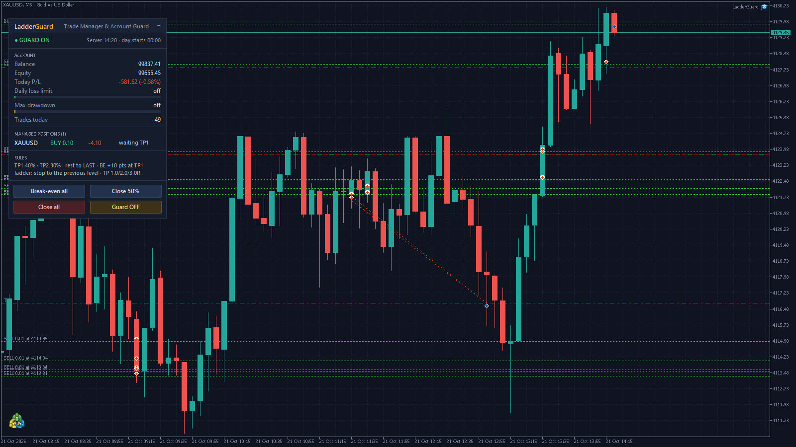
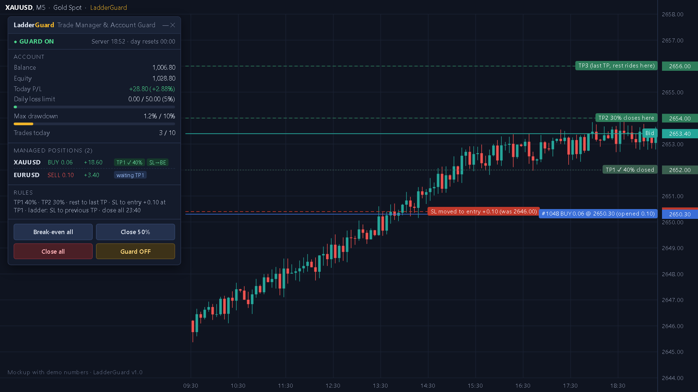
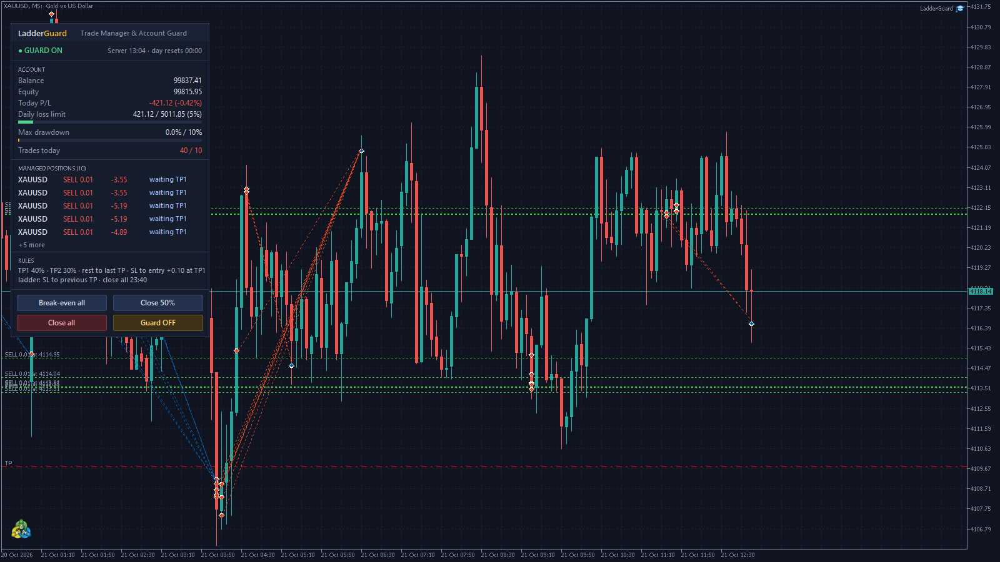

LadderGuard: trade manager and account guard for MT5
Attach it to one chart and it looks after every open position, whether you opened it by hand or another EA did: partial profits at the targets, the stop to break-even, a stop that climbs level by level, and an optional close-all at a set time. At the same time it watches the whole account and locks trading when a daily loss or drawdown limit is hit.

Trade manager
You choose the positions
Every position, manual trades only, or one EA's magic number; every symbol or only the chart's symbol.
Targets from your stop
R is the stop distance. TP1 at 1R, TP2 at 2R, the last target at 3R or at the position's own take-profit. All adjustable.
Partial profits
40% of the original volume closes at TP1 and 30% at TP2; the rest rides to the last target. Volumes are rounded to the broker's steps.
Break-even and ladder
At TP1 the stop moves to entry plus a few points. After that, each time a new level is reached the stop moves up to the previous one.
Close on time
Optional close-all of the managed positions at a server time you set, for example before the daily rollover.
Panel buttons
Break-even all, Close 50%, Close all and Guard OFF, right on the chart.

Account guard
Daily loss limit
A percentage of the day-start balance, a fixed amount, or both (whichever is hit first). When it is hit, every position is closed and trading stays locked until the next day.
Maximum drawdown
Measured from the equity peak, or static from the starting balance as many prop firms count it. A breach closes everything and locks until you unlock it.
Trades per day
A cap on new positions per day. Anything opened beyond it is closed at once until the day ends.
How it was tested
- 43 of 43 unit tests pass: target math, volume rounding, break-even side, ladder steps and the guard's limits.
- MetaTrader 5 Strategy Tester: TP1 and TP2 partial closes, break-even, the ladder up to level 4, the daily-loss lock, the drawdown lock, the trades-per-day cap and the timed close-all all checked.
- Live on a demo account on 21 October 2026: it adopted a manual XAUUSD trade, closed 40% at TP1 and moved the stop to break-even.

The source code is private; this page shows what the Expert Advisor does, not its code.
Want LadderGuard on your account?
Available on request. The percentages, targets and limits are inputs, and it can be adapted to your own rules.
Message on Telegram WhatsApp Email See my CV